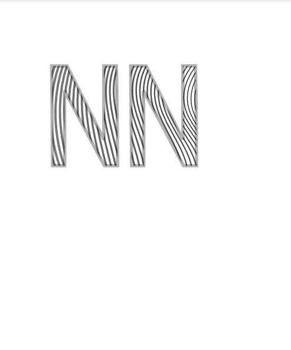
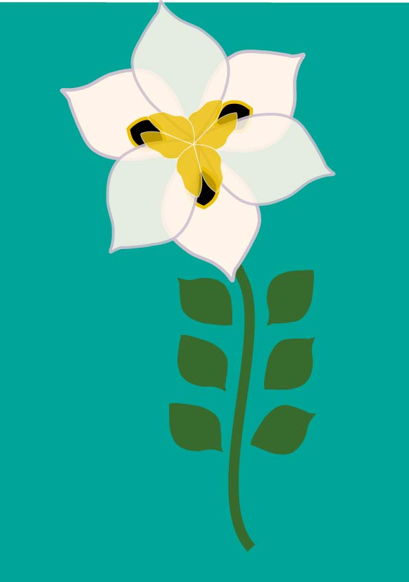
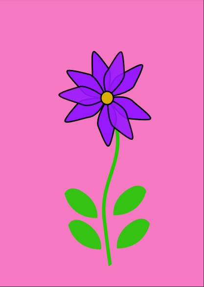
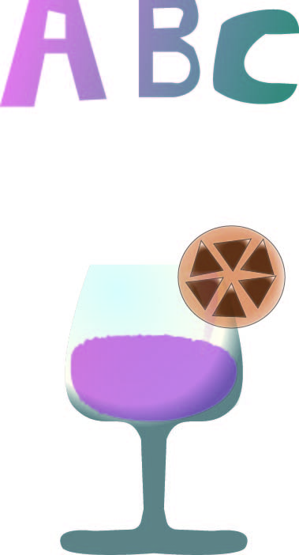
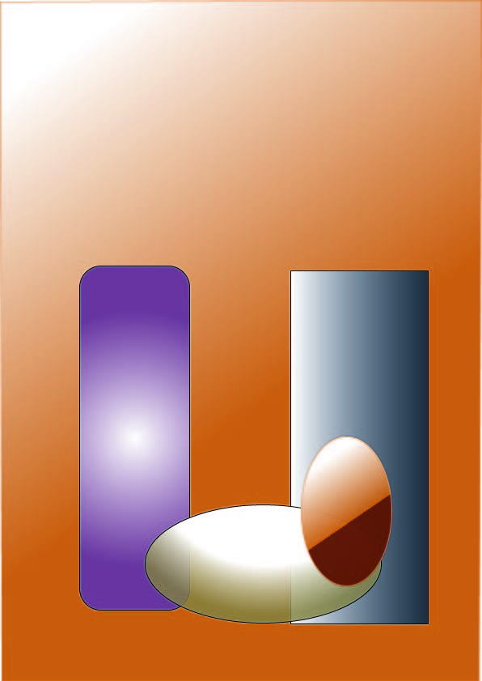
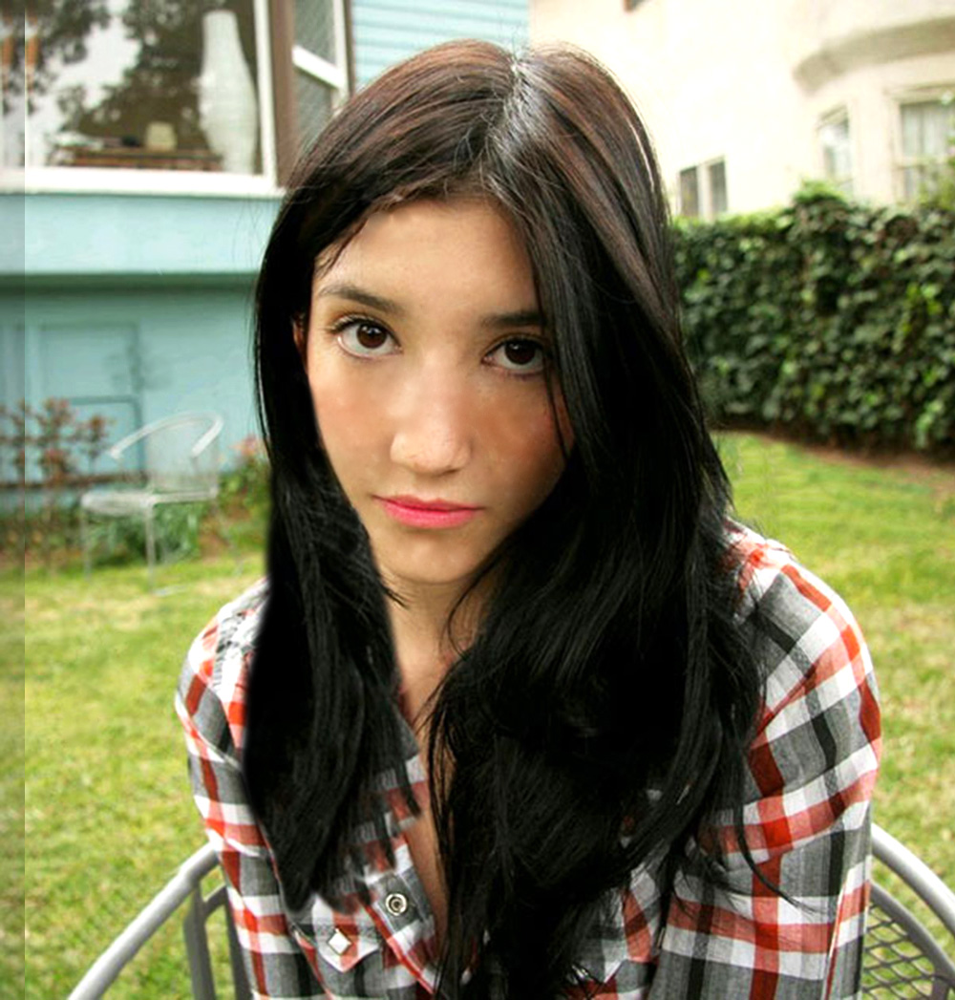
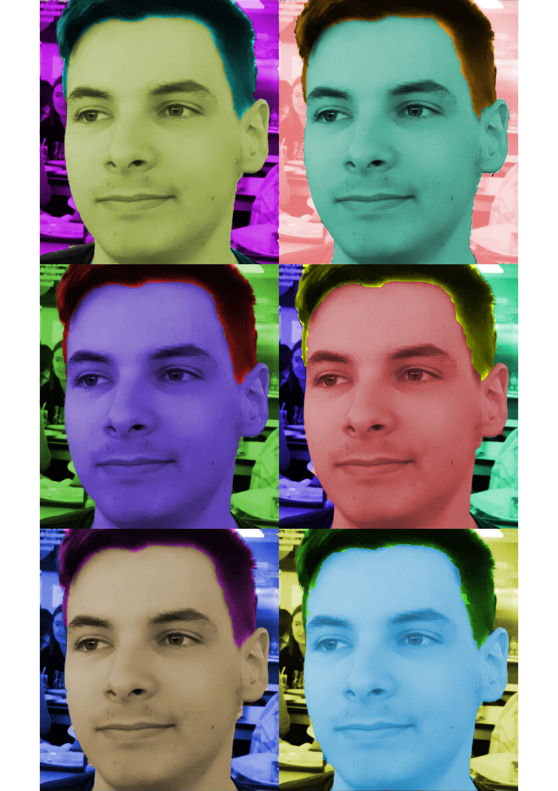
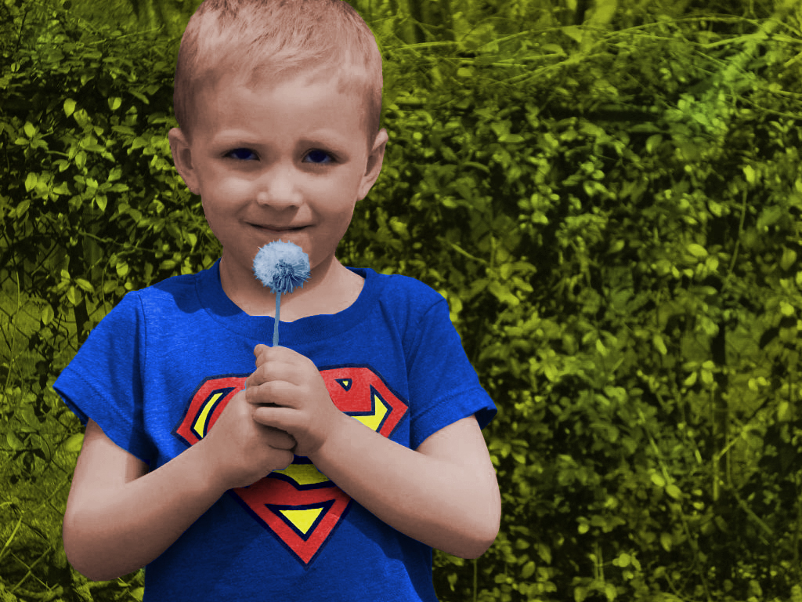
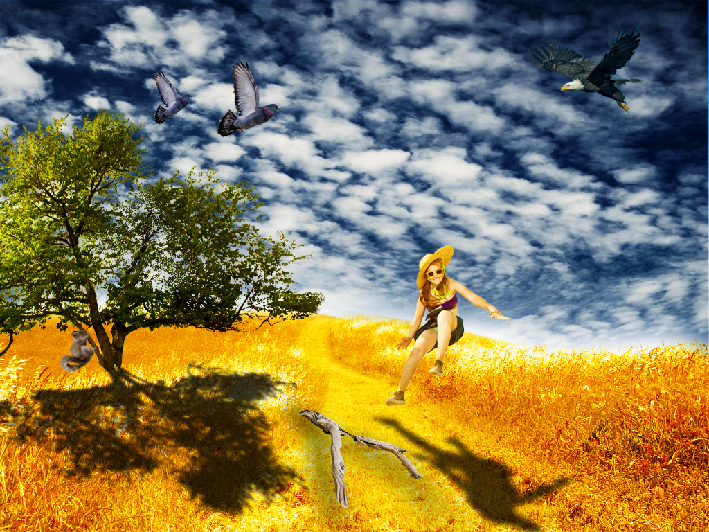

Vektorska grafika:
-Za zadatak smo morali napraviti sliku flore/faune podmorja pomoću vektorske grafike
-Ostale slike su zadatci koje sam radio pomoću vektorske grafike
Vježba 2-Krivulje
Vježba 3-Cvijet
 Vježba 4-Gradijent
 
Pixel grafika:
-Na slici je projektni zadatak iz pixel grafike koji smo morali napraviti.
-Ukratko trebali smo popraviti jednu sliku koju odaberemo i izrezati i zaljepiti na nju 6-7 elemenata iz drugih slika
Vježba 5-Retuširanje

Vježba 6-Koloriranje
 Vježba 7-Fotomontaža
Vježba 8-Gif

Stara web stranica:
Stara webstranica